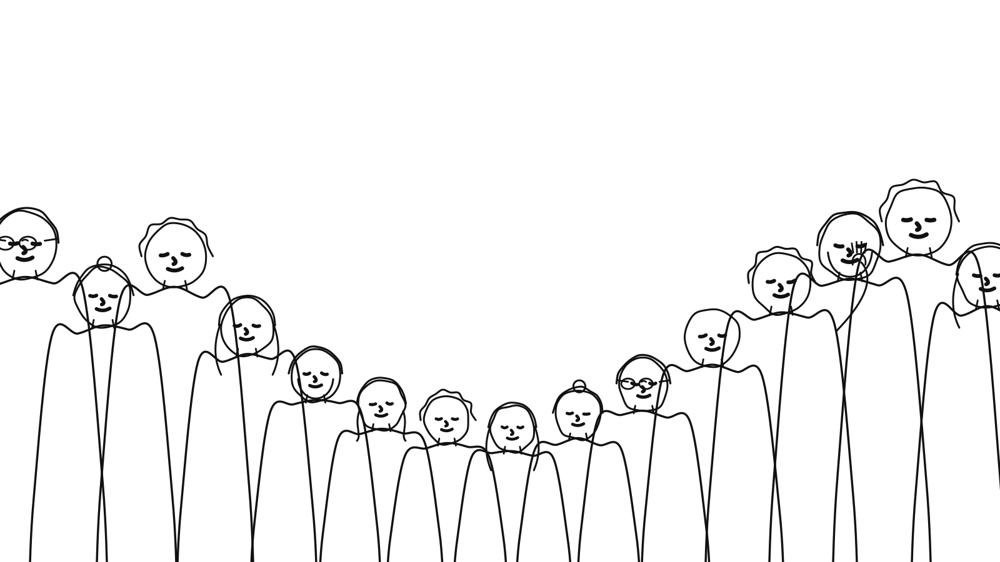

Спільнота взаємопідтримкиПеревикуп — це спільнота взаємопідтримки, самопізнання (і приколів). Якщо тобі самотньо, хріново чи просто заєбали токсичні люди і треба краще середовище — це для тебе.
Поділитись проблемоюЛюдина спочатку отримує попередження, а потім летить в мут/бан.
Ця ж схема працює і для наступного:
Само собою, все не так серйозно, здебільшого ми просто теревенимо і гонимо біса, тому будь людиною і все буде збс)
Якщо відчуваєте що хтось проявив неповагу по відношенню до вас — пишете адміну чату, в якому це сталось, і він розбирається. Якщо справедливості не досягнуто, пишете овнеру чату, який є засновником спільноти, і він виступить фінальним арбітром.
Всі чати однією папкою — https://t.me/addlist/lEO8Wl_IrDc4Mjli